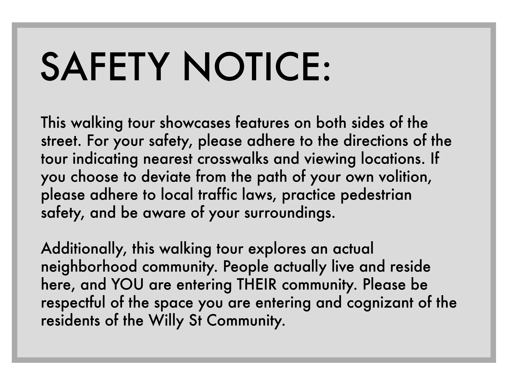

Welcome to Williamson Street in the beautiful Madison, Wisconsin! Better known as “Willy St,” this road in the Williamson-Marquette Neighborhood attracts visitors and residents to its weirdness. Encouraged through popular sayings like “Keep Willy St Weird,” the Willy St community strives to preserve its identity of quirkiness and its eclectic nature. Traces of this campaign can be spotted all throughout the street! Through vibrant colors, public art, goofy lil’ Easter eggs, and more, the personality of the street and its community shines through. This walking tour aims to give you a taste of that weirdness. All weirdness aside, Willy St residents exemplify what being a community means. They have transformed their home into a place where they feel represented within the space, engaged with other community members, confident they belong, and proud of their neighborhood. Underneath all of its quirkiness lies a foundation created through intentional community efforts. The strength of this community bond makes everyone a neighbor, and no one a stranger. By experiencing this walking tour, you’ll be immersed in all of Willy St’s weirdness, while also learning how these tokens of weirdness strengthen their community. So, come on, weirdos! Click the button below to begin.
